Regrow — ユーザーマニュアル
月次業績レポートシステム | 提供元：Relaxation Salon 様向け | 開発：合同会社 改善マニア
最終更新：2026-03-22
1. 本ツールについて
できること
Regrowは、リラクゼーションサロンの月次業績レポートを自動生成するためのシステムです。
毎月のExcel「担当者別分析表」と、手動入力するKPIデータを組み合わせて、18枚のスライド資料（グラフ・テーブル付き）を自動で作成します。
| 機能 | 説明 |
|---|---|
| Excelインポート | 担当者別分析表を取り込み、スタッフの売上・客数等を自動抽出 |
| 手動データ入力 | 店舗KPI（稼働率・コメント等）やスタッフ個別データを入力 |
| 目標売上入力 | スタッフ別の月間目標売上を入力し、達成率を自動算出 |
| スライド資料閲覧 | 18枚構成のレポートスライドを自動生成・閲覧 |
| マスタ管理 | 店舗・ユーザー・権限の管理 |
| 月別データ管理 | YYYY-MM単位でデータを管理し、過去月の閲覧・比較が可能 |
利用の流れ
2. 動作環境・初期設定
動作環境
| 項目 | 要件 |
|---|---|
| ブラウザ | Google Chrome / Microsoft Edge / Safari（最新版推奨） |
| インターネット | 必要 |
| ログイン | メールアドレスとパスワード |
| データ保存 | サーバーに自動保存（ブラウザのキャッシュ削除でもデータは消えません） |
用意するもの
| 書類 | 必須 | 説明 |
|---|---|---|
| 担当者別分析表（Excel） | 必須 | 業務システムから出力される .xlsx / .xls ファイル。店舗ごとに1ファイル |
| スタッフ稼働率 | 必須 | 各スタッフの月間稼働率（%） |
| CS登録数 | 必須 | 各スタッフのCS登録件数 |
| お客様の声 | 任意 | お客様からのフィードバックテキスト |
| スタッフ目標売上 | 任意 | スタッフ別の月間目標売上金額 |
権限（ロール）
| ロール | 説明 | できること |
|---|---|---|
| 管理者（admin） | システム管理者 | 全機能の操作、マスタ管理、データ編集 |
| 店長（manager） | 店舗責任者 | スライドの閲覧 |
| 閲覧者（viewer） | 一般スタッフ | スライドの閲覧のみ |
3. 画面の見かた
月選択バー
画面最上部に表示される月選択バーから、対象月の切り替えと新規作成を行います。
| 要素 | 説明 |
|---|---|
| 対象月ドロップダウン | 表示する対象月を切り替えます |
| 「+ 新規作成」 ボタン | 新しい月を作成します（YYYY-MM形式で入力） |
タブナビゲーション
月選択バーの下に、各機能タブが並びます。
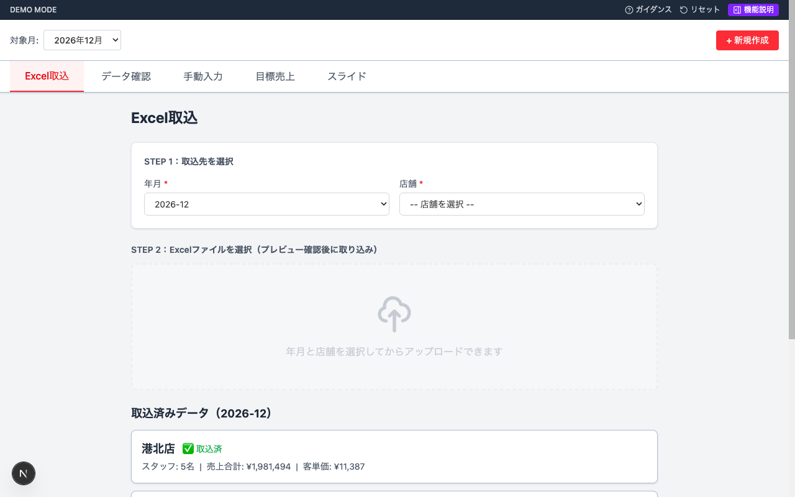
| タブ | 説明 |
|---|---|
| Excel取込 | Excelファイルのアップロード |
| データ確認 | インポート済みデータの一覧表示 |
| 手動入力 | 店舗KPI・スタッフ稼働率・CS登録数の入力 |
| 目標売上 | スタッフ別目標売上の入力 |
| スライド | 18枚のスライド資料を閲覧 |
4. Excel取込
Excelファイル（担当者別分析表）を取り込む画面です。
操作手順
- STEP 1 で取込先の 「年月」 と 「店舗」 をドロップダウンから選択します
- STEP 2 のエリアにExcelファイルをドラッグ＆ドロップ、またはクリックしてファイルを選択します
- プレビュー画面が表示されるので、データ内容とスタッフのマッチング結果を確認します
- 問題がなければ 「確認して取り込む」 ボタンをクリックします
プレビュー画面の見かた
プレビューでは以下が表示されます。
- 取込先情報：選択した年月・店舗・集計期間
- 店舗合計：売上合計・対応客数・指名数・客単価
- スタッフ一覧：各スタッフの売上データとマッチング状況
マッチング状態
| アイコン | 状態 | 説明 |
|---|---|---|
| ✅ | DB登録済 | ユーザー名と一致するユーザーが見つかった |
| ⚠️ | 未登録 | ユーザー名と一致するユーザーがいない。先にマスタ管理で登録が必要 |
| 🔄 | 同名ユーザー | 同じ名前のユーザーが複数いるため、ドロップダウンで選択が必要 |
取込済みデータの表示
画面下部に、現在の年月で取り込み済みの店舗がカードで表示されます。
| 表示項目 | 説明 |
|---|---|
| 店舗名 + ✅ 取込済バッジ | 取込完了した店舗 |
| スタッフ数 | インポートされたスタッフの人数 |
| 売上合計 | 店舗の月間売上合計 |
| 客単価 | 店舗の平均客単価 |
| インポート日時 | 取込実行日時 |
注意事項
- 同じ店舗・年月のデータを再度アップロードすると上書きされます
- 未登録スタッフがいる場合は、プレビュー画面から 「新規登録」 ボタンでその場で登録できます
- 対応ファイル形式：
.xlsx/.xls
Excelから抽出される項目
| 項目 | 説明 |
|---|---|
| スタッフ名 | 担当者の氏名 |
| 売上合計 | スタッフの月間売上 |
| 新規客数 | 新規のお客様数 |
| 対応客数 | 対応した総客数 |
| 指名数 | 指名された件数 |
| 客単価 | 1人あたりの単価 |
5. データ確認
取り込んだExcelデータを店舗別に一覧表示する画面です。
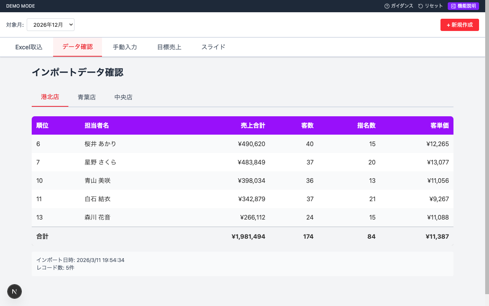
操作手順
- 画面上部の 店舗タブ で確認したい店舗を選択します
- スタッフ一覧がランキング順で表示されます
テーブルの列
| 列 | 説明 |
|---|---|
| 順位 | Excel上のランキング |
| 担当者名 | スタッフ名 |
| 売上合計 | 月間売上金額 |
| 客数 | 対応客数 |
| 指名数 | 指名件数 |
| 客単価 | 1人あたりの平均単価 |
- テーブル最下行に店舗合計が表示されます
- 画面下部にインポート日時とレコード数が確認できます
- 未取込の店舗タブには 「（未取込）」 と表示されます
6. 手動入力
Excelから自動取得できないデータを手動で入力する画面です。3つのサブタブに分かれています。
6.1 店舗KPIタブ
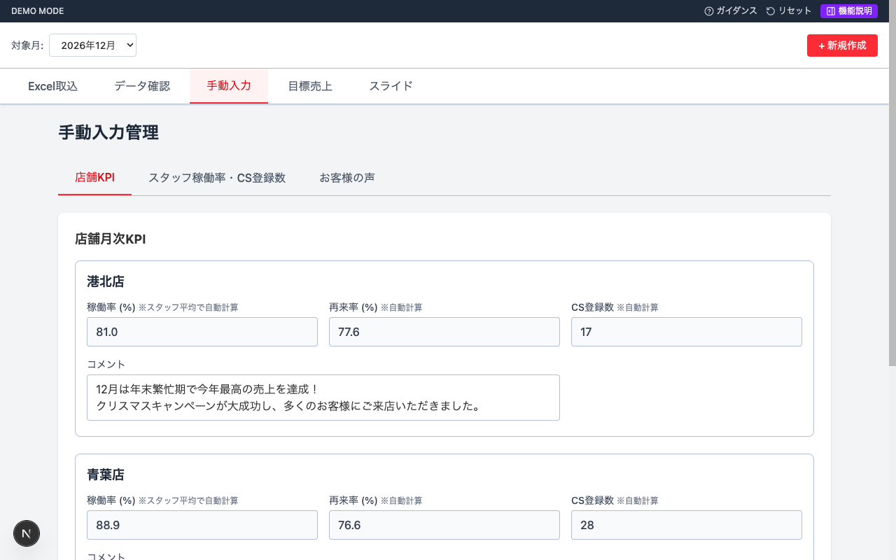
各店舗について以下が表示されます。
| 項目 | 入力/自動 | 説明 |
|---|---|---|
| 稼働率 (%) | 自動計算 | スタッフ稼働率の平均値（編集不可） |
| 再来率 (%) | 自動計算 | (対応客数 − 新規客数) ÷ 対応客数 × 100（編集不可） |
| CS登録数 | 自動計算 | スタッフCS登録数の合計（編集不可） |
| コメント | 手動入力 | 月次の店舗振り返りコメント |
6.2 スタッフ稼働率・CS登録数タブ
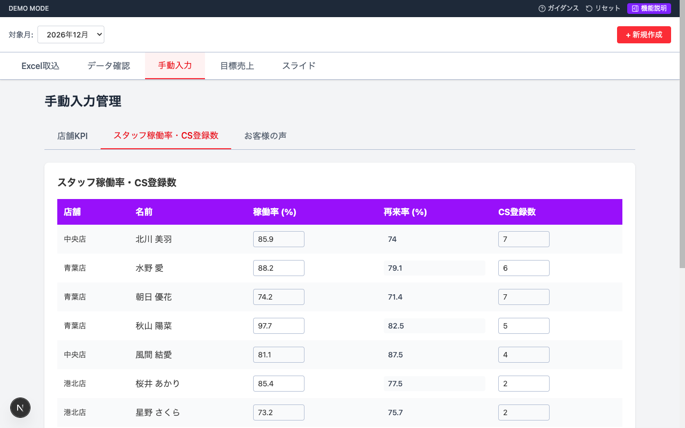
Excelをインポートすると、スタッフ一覧が自動で表示されます。
| 列 | 入力/自動 | 説明 |
|---|---|---|
| 店舗 | 自動表示 | スタッフの所属店舗 |
| 名前 | 自動表示 | スタッフ名 |
| 稼働率 (%) | 手動入力 | スタッフ個人の月間稼働率 |
| 再来率 (%) | 自動計算 | (対応客数 − 新規客数) ÷ 対応客数 × 100（編集不可） |
| CS登録数 | 手動入力 | スタッフのCS登録件数 |
6.3 お客様の声タブ
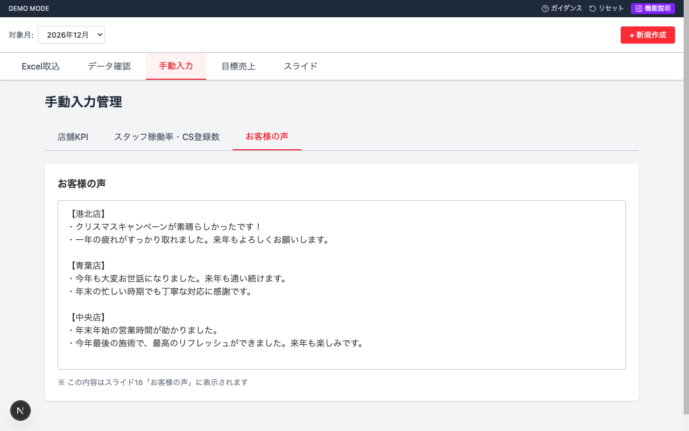
- テキストエリアにお客様からのフィードバックを自由に入力します
- この内容はスライド18「お客様の声」にそのまま反映されます
自動保存
- 入力欄からフォーカスが外れた時点で自動保存されます（保存ボタンはありません）
- 保存時に画面右上に「保存完了 ✅」が一時表示されます
- データはデータベースに直接保存されます
自動計算の計算式
| 項目 | 計算式 |
|---|---|
| スタッフ再来率 | (対応客数 − 新規客数) ÷ 対応客数 × 100（小数第1位まで） |
| 店舗再来率 | 店舗内全スタッフの再来客数合計 ÷ 対応客数合計 × 100 |
| 店舗稼働率 | 店舗内全スタッフの稼働率の平均値（小数第1位まで） |
| 店舗CS登録数 | 店舗内全スタッフのCS登録数の合計 |
7. 目標売上
スタッフ別の月間目標売上を入力する画面です。入力された目標値はスライドの「売上目標達成率」に反映されます。
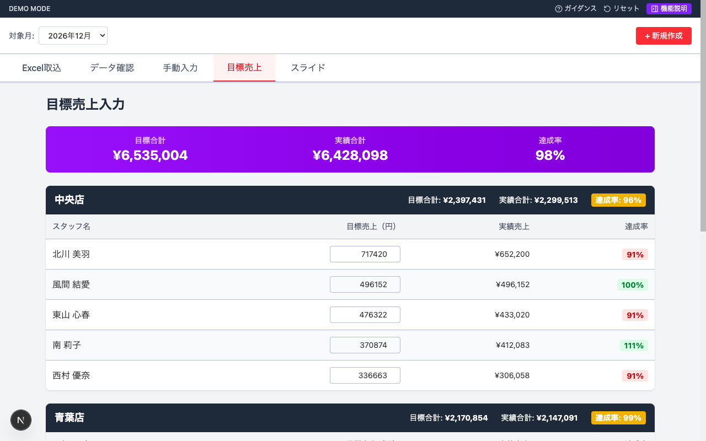
画面構成
全体合計サマリー（画面上部・紫帯）
| 項目 | 説明 |
|---|---|
| 目標合計 | 全店舗の目標売上合計 |
| 実績合計 | 全店舗の実績売上合計（Excelインポートデータ） |
| 達成率 | 実績合計 ÷ 目標合計 × 100 |
店舗別テーブル
各店舗がグループ分けされ、以下の情報が表示されます。
店舗ヘッダー（黒帯）：店舗名、目標合計、実績合計、達成率バッジ
| 列 | 入力/自動 | 説明 |
|---|---|---|
| スタッフ名 | 自動表示 | スタッフ名 |
| 目標売上（円） | 手動入力 | 月間の目標売上金額 |
| 実績売上 | 自動表示 | Excelインポートデータの売上（編集不可） |
| 達成率 | 自動計算 | 実績 ÷ 目標 × 100 |
達成率の色分け
| 色 | 条件 |
|---|---|
| 緑 | 100%以上（目標達成） |
| 赤 | 100%未満（目標未達） |
手動入力と同様に、フォーカスが外れた時点で自動保存されます。
8. スライド閲覧
ExcelデータとKPIデータから自動生成された18枚のスライド資料を閲覧する画面です。
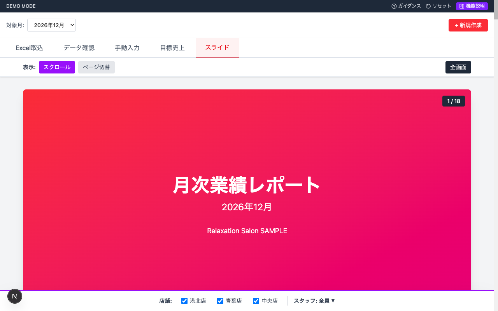
スライド構成（全18枚）
| No. | タイトル | 内容 |
|---|---|---|
| 1 | タイトルスライド | 月次業績レポート、対象月の表示 |
| 2 | 目次 | レポートの構成一覧 |
| 3 | 全体サマリー | 店舗別KPIテーブル（売上/稼働率/客単価/再来率）+ 店舗コメント |
| 4 | 客単価 - 年間推移 | 店舗別の客単価を月別折れ線グラフで比較 |
| 5 | 稼働率 - 年間推移 | 店舗別の稼働率を月別折れ線グラフで比較 |
| 6 | 再来率 - 年間推移 | 店舗別の再来率を月別折れ線グラフで比較 |
| 7 | 全指標統合 - 年間推移 | 客単価・稼働率・再来率を1つのグラフに統合表示 |
| 8 | スタッフ別パフォーマンス | スタッフ別テーブル（売上・稼働率・指名割合・再来率・CS登録率） |
| 9 | スタッフ稼働率チャート | スタッフ稼働率の縦棒グラフ |
| 10 | スタッフ別売上目標達成率（テーブル） | スタッフ別の目標売上・実績・差額・達成率テーブル |
| 11 | スタッフ別売上目標達成率（グラフ） | 目標vs実績の横棒グラフ + 達成率ライン |
| 12 | 店舗別売上目標達成率（テーブル） | 店舗別の目標合計・実績合計・差額・達成率テーブル |
| 13 | 店舗別売上目標達成率（グラフ） | 目標vs実績の横棒グラフ + 達成率ライン |
| 14 | スタッフ別累計比較①（テーブル） | 売上金額・指名件数の当月/累計平均/差分テーブル |
| 15 | スタッフ別累計比較①（グラフ） | 売上（棒グラフ）+ 指名（折れ線）の複合グラフ |
| 16 | スタッフ別累計比較②（テーブル） | 再来率・客単価の当月/累計平均/差分テーブル |
| 17 | スタッフ別累計比較②（グラフ） | 客単価（棒グラフ）+ 再来率（折れ線）の複合グラフ |
| 18 | お客様の声 | 手動入力されたお客様のフィードバックを表示 |
スライド画面の例
全体サマリー
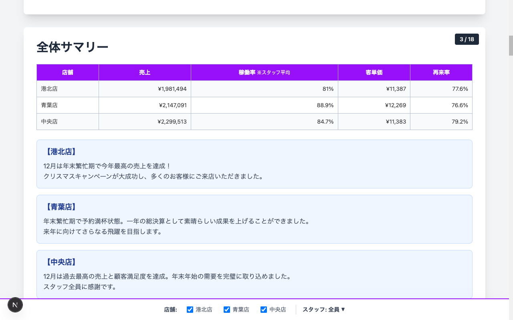
- 店舗別の売上・稼働率・客単価・再来率がテーブルで一覧表示されます
- 各店舗のコメント（手動入力で登録したもの）が下部に表示されます
スタッフ別パフォーマンス
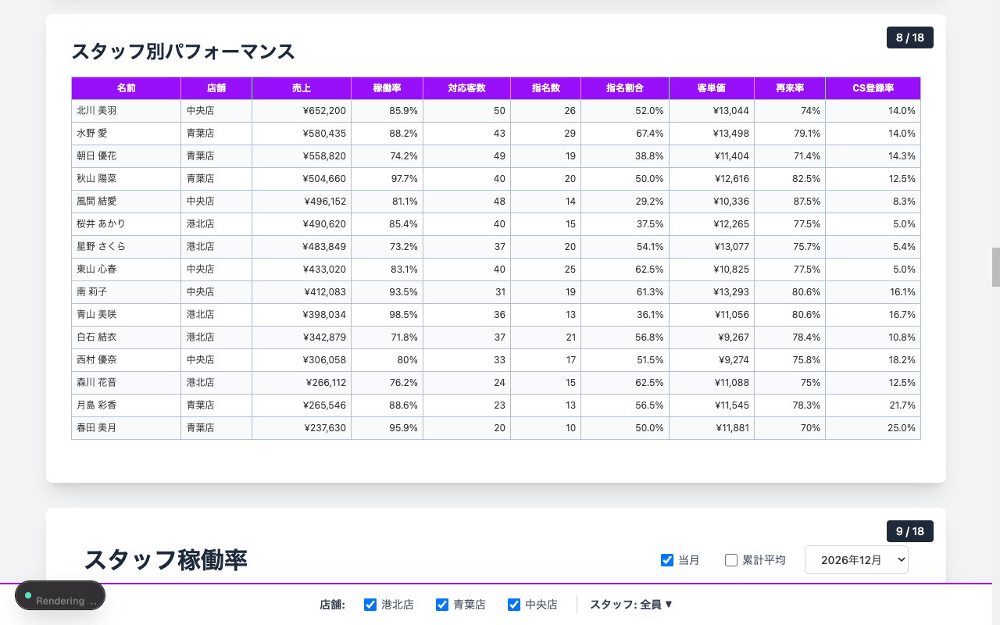
売上目標達成率
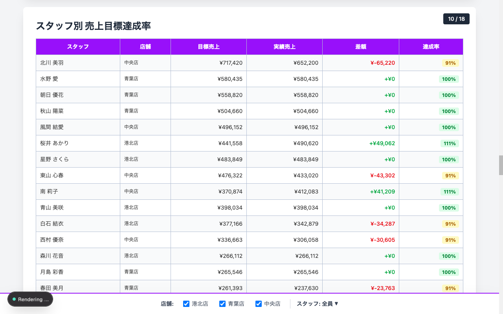
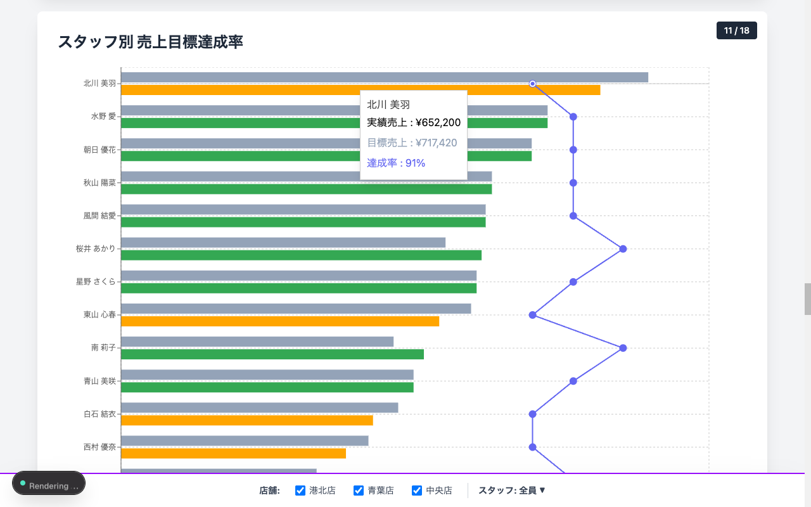
スタッフ別累計比較
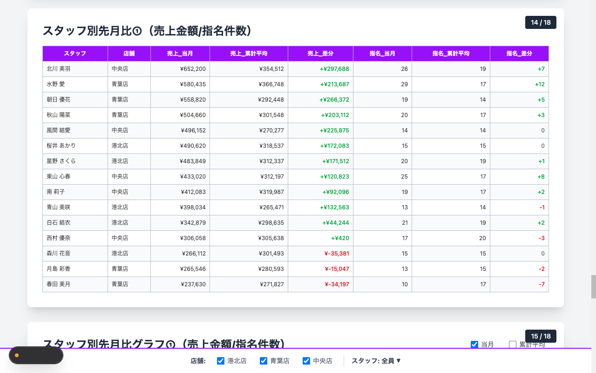
閲覧モード
画面上部のコントロールバーで閲覧モードを切り替えられます。
| モード | 説明 |
|---|---|
| スクロール | 全18枚を縦に並べてスクロール表示（デフォルト） |
| ページ切替 | 1枚ずつ表示し、ボタンまたは矢印キーで前後移動 |
ページ切替モードの操作
| 操作 | 動作 |
|---|---|
| 「次へ」 ボタン / → キー | 次のスライドへ |
| 「前へ」 ボタン / ← キー | 前のスライドへ |
| 「全画面」 ボタン | 全画面表示に切り替え |
| Escキー | 全画面を終了 |
店舗フィルタ
画面下部の店舗チェックボックスで、表示する店舗を絞り込めます。
- 複数店舗を同時に表示可能です
- チェックを外すと、その店舗とスタッフのデータが非表示になります
スタッフフィルタ
「スタッフ: 全員 ▼」 をクリックすると、表示するスタッフを選択できます。
- 店舗ごとにグルーピングされたチェックボックスで選択します
- スタッフ別のスライド（8～17）に適用されます
累計平均との比較
スライド14～17の累計比較では、チェックボックスで「当月」「累計平均」の表示を切り替えられます。
- デフォルト：当月のみ表示（累計平均はOFF）
9. マスタ管理
アクセス方法
サイドメニューから 「マスタ管理」 を選択します。管理者（admin）のみアクセス可能です。
9.1 店舗マスタ
店舗の登録・編集・削除を行います。
| 項目 | 必須 | 説明 |
|---|---|---|
| ID | - | 店舗の識別番号（自動採番） |
| 名前 | 必須 | 店舗の略称（スライドに表示される名前） |
| 有効/無効 | - | 無効にすると各画面で非表示になります |
操作
- 「新規追加」 ボタンで新しい店舗を登録（名前・有効/無効を入力）
- 各行の鉛筆アイコンで編集
- 各行のゴミ箱アイコンで削除（確認ダイアログあり）
9.2 ユーザー・権限管理
ユーザーの登録・編集・担当店舗の割当・BAN/BAN解除の管理を行います。
ユーザー一覧テーブル
| 列 | 説明 |
|---|---|
| 名前 | ユーザーの表示名 |
| メールアドレス | ログイン用メールアドレス |
| 担当店舗 | ドロップダウンで店舗を選択（未設定も可） |
| 状態 | BANされている場合は BAN バッジとBAN理由が表示 |
| 操作 | 編集・BAN/BAN解除・削除ボタン |
ユーザーの新規追加
| 項目 | 必須 | 説明 |
|---|---|---|
| 名前 | 必須 | ユーザーの表示名（Excel上のスタッフ名と一致させる） |
| メールアドレス | 任意 | ログイン用 |
| パスワード | 任意 | ログイン用 |
操作
- 「新規追加」 ボタンでユーザーを登録
- 鉛筆アイコン でユーザー情報を編集（名前・メールアドレス・パスワード変更）
- 担当店舗ドロップダウン で所属店舗を設定（即時反映）
- 盾アイコン（オレンジ） でBAN（理由の入力可）。BANされたユーザーはインポート時のマッチング対象外になります
- 盾アイコン（緑） でBAN解除
- ゴミ箱アイコン で完全削除
9.3 権限割当
権限割当テーブルで、各ユーザーにロール（admin / manager / viewer）を設定します。
9.4 データ管理（管理者向け）
マスタ管理画面のヘッダーに以下のボタンが用意されています。
| ボタン | 説明 |
|---|---|
| データリセット | Regrowアプリの全データを削除します。この操作は取り消せません。 |
| シードデータ投入 | 既存データをリセットした上で、デモ用のサンプルデータを投入します |
| Excelからシード投入 | 既存データをリセットし、regrow-doc/excel/ 内のExcelファイルからシードデータを投入します |
10. 月次レポート作成の全体フロー
毎月のレポート作成は以下の手順で行います。
| 手順 | 操作 | 完了条件 |
|---|---|---|
| ① 新しい月を作成 | 月選択バーの 「+ 新規作成」 ボタンから年月を入力 | 月が一覧に追加される |
| ② Excelをインポート | 各店舗の担当者別分析表をアップロード | 全店舗分のデータがインポート済み |
| ③ 手動入力 | スタッフ稼働率・CS登録数・コメント・お客様の声を入力 | 全店舗・全スタッフ分の入力完了 |
| ④ 目標売上を入力 | スタッフ別の月間目標売上を入力 | 全スタッフの目標値を設定 |
| ⑤ スライドを確認 | スライドタブで18枚を閲覧 | データに問題がないことを確認 |
用語集
| 用語 | 説明 |
|---|---|
| 担当者別分析表 | 業務システムから出力されるExcelファイル。スタッフごとの売上・客数等が記載されている |
| 稼働率 | スタッフまたは店舗の月間稼働率（%）。スタッフ稼働率の平均が店舗稼働率になる |
| 再来率 | リピーターの割合。(対応客数 − 新規客数) ÷ 対応客数 × 100 で算出 |
| 客単価 | お客様1人あたりの平均売上金額 |
| 指名数 | お客様から指名を受けた件数 |
| CS登録数 | カスタマーサービスへの登録件数 |
| 累計平均 | 当年1月から当月までの平均値 |
| 目標達成率 | 実績売上 ÷ 目標売上 × 100 |
| KPI | 重要業績評価指標（Key Performance Indicator）。店舗の業績を測る数値 |
| BAN | ユーザーを無効化する機能。BANされたユーザーはインポート時のマッチング対象外 |
| 店舗フィルタ | スライド表示時に、表示対象の店舗を絞り込む機能 |
| スタッフフィルタ | スライド表示時に、表示対象のスタッフを絞り込む機能 |
© 2026 合同会社 改善マニア — Regrow ユーザーマニュアル v2.0